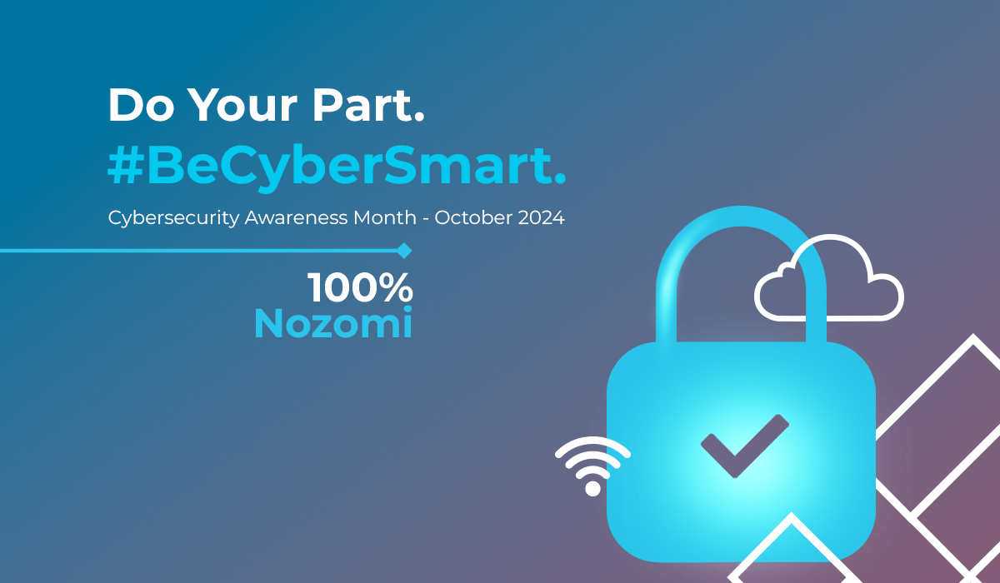
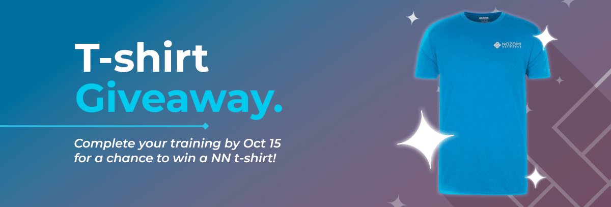
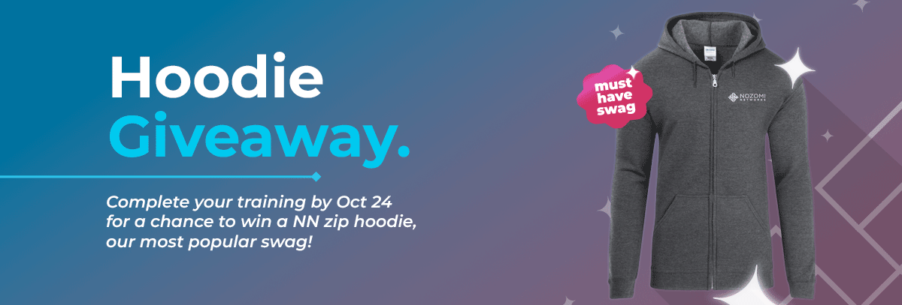
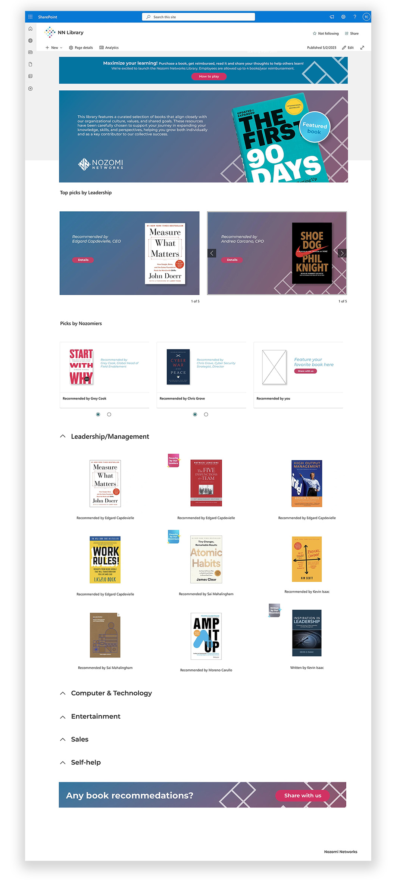
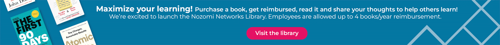
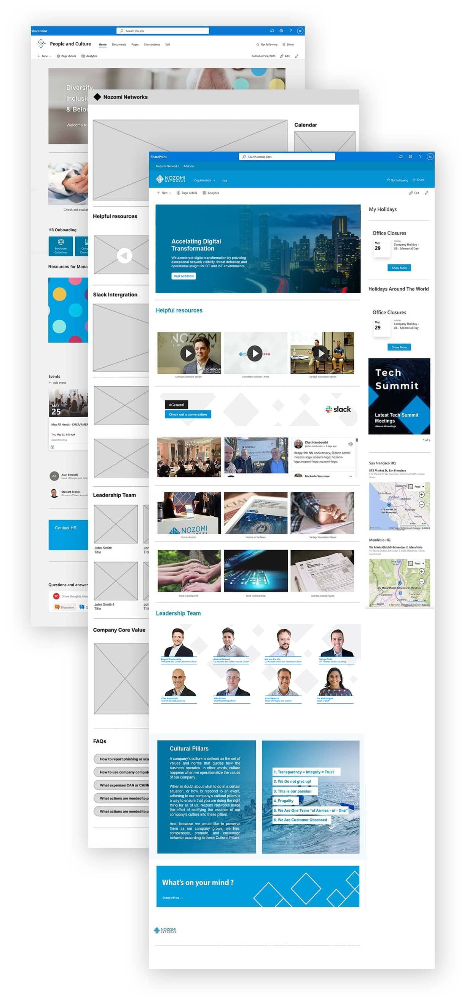

Sharepoint web and internal event designs for Nozomi Networks
Cybersecurity Awareness Event Graphic Design
Follow company brand guidelines to design graphic assets for 2024 Annual Security training event. The goal is to create clean and simple designs with legible text. Emphasis on colorful images rather than mono.



NN Library Sharepoint Web Design
This was a new reimbursement program offer to Nozomi Networks (NN) employees. The idea from the executive team is to create a library with a series of book recommendations from NN leadership and Nozomiers to encourage employees
to keep expanding their knowledge and share it to help each other grow.



Nozomi Networks Sharepoint Homepage
My role was to redesign and rebuild company internal websites. Working directly with HR leadership, I collected ideas and requirements
to create designs and implement them in SharePoint. The goal of the project was to create Sharepoint sites that contain useful company information
and internal resources for employees. The web design must align with company brand guidelines and be easy to navigate and maintain.
The sites received excited and positive feedback once completed with traffic drastically increasing. Many other department leadership was also interested and driven in using Sharepoint as their information channel.
